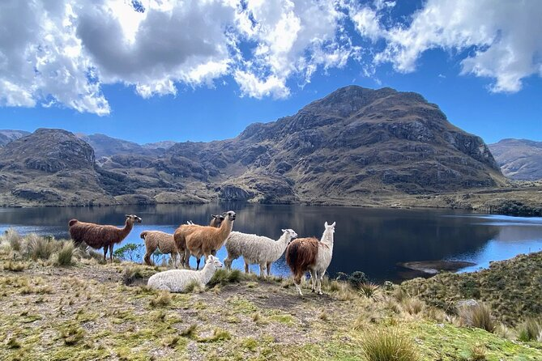

Parque Nacional El Cajas

Acerca del lugar
A pocos kilómetros de Cuenca, este santuario de páramo andino es un espectáculo de la naturaleza. Alberga más de 235 lagunas de origen glaciar conectadas por riachuelos. Es un lugar místico, donde la niebla abraza las montañas y los bosques de Polylepis invitan a realizar caminatas.
Clima
Ubicación
Vía Cuenca - Molleturo - Naranjal Km 30.Cantón Cuenca, Azuay, Ecuador.